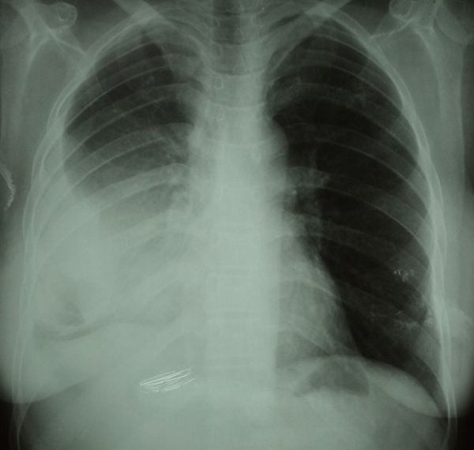

Réponses cas clinique N°49
1- La radiographie thoracique de face montre une opacité du tiers inférieur de l’hémithorax droit, dense homogène de tonalité hydrique sans bronchogramme aérien effaçant la coupole diaphragmatique droite et le bord droit du cœur, la limite supérieure est concave et se continue vers le haut par une ligne bordante (ligne de Damoison) = pleurésie droite (flèche).
2- Les 4 diagnostics les plus probables sont :
- Pleurésie d’origine cardiaque (patiente diabétique).
- Pleurésie tuberculeuse
- Pleurésie métastatique
- Pleurésie dans le cadre d’une maladie de système
3- Premièrement il faut faire une ponction pleurale qui va nous permettre d’étudier l’aspect macroscopique du liquide et de réaliser une étude chimique pour différencier une pleurésie exsudative d’une pleurésie transudative.
Chez notre patiente l’étude chimique montre un liquide jaune citrin exsudatif (protéines= 40g/l).
Donc il faut compléter par une biopsie pleurale à la recherche d’un granulome épithélio-giganto-cellulaire.
Il faut faire également une recherche de BK dans les expectorations ou par tubage gastrique avec examen direct et culture et une intradermoréaction à la tuberculine, avec un bilan à la recherche d’une atteinte d’une autre séreuse (péricarde et péritoine), le dosage de l’adénosine désaminase, et une fibroscopie bronchique.
4- Devant la négativité de ces investigations et l’incertitude diagnostique, il faut pratiquer une thoracoscopie à visée diagnostique.
